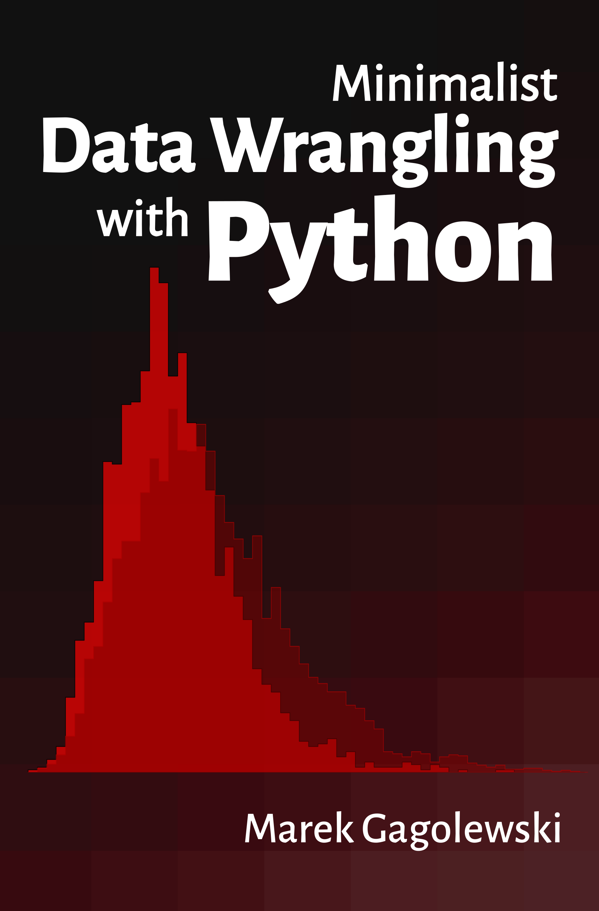

Minimalist Data Wrangling with Python#
Minimalist Data Wrangling with Python is envisaged as a student’s first introduction to data science, providing a high-level overview as well as discussing key concepts in detail. We explore methods for cleaning data gathered from different sources, transforming, selecting, and extracting features, performing exploratory data analysis and dimensionality reduction, identifying naturally occurring data clusters, modelling patterns in data, comparing data between groups, and reporting the results.
Although available online, it is a whole course, and should be read from the beginning to the end. In particular, refer to the Preface for general introductory remarks.
For many students around the world, educational resources are hardly affordable. Therefore, I have decided that this book should remain an independent, non-profit, open-access project (available both in PDF and HTML forms). Whilst, for some people, the presence of a “designer tag” from a major publisher might still be a proxy for quality, it is my hope that this publication will prove useful to those who seek knowledge for knowledge’s sake.
You can also order a paper copy.
Any bug/typo reports/fixes are appreciated. Please submit them via this project’s GitHub repository. Thank you.
Citation: Gagolewski M. (2023), Minimalist Data Wrangling with Python, Zenodo, Melbourne, DOI: 10.5281/zenodo.6451068, ISBN: 978-0-6455719-1-2, URL: https://datawranglingpy.gagolewski.com/.
Make sure to check out Deep R Programming [34] too.
Copyright (C) 2022–2023 by Marek Gagolewski. Some rights reserved. This material is published under the Creative Commons Attribution-NonCommercial-NoDerivatives 4.0 International License (CC BY-NC-ND 4.0).
Start here
Introducing Python
Unidimensional data
Multidimensional data
Heterogeneous data
Other data types
Appendix